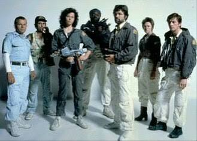

👩🚀 🌌 ALIEN (1979) — CERTIFIED MGC VF-32

⚖️ MGC Lower Court Docket
- ASSET TITLE: Alien (1979) – The Over-Hyped Industrial Pacing Ledger
- OFFICIAL REGISTRY GRADE: Certified MGC VF-32 (Very Fine / Deeply Circulated Trucking Alloy)
- LOWER COURT JURISDICTION: Lower Tribunal Room / Sci-Fi Horror Docket
- PRESIDING PANEL: Action & Ballistics Judge Dex, Chief Grader MGC, and Chief Justice MGC
- CASE FILE: #052
📜 THE FORENSIC NARRATIVE BREAKDOWN & LUSTER LOG
The Action Judge drops the heavy workhorse frame onto the dark-mode terminal and dials the strict 5x numismatic magnifying lens straight onto Ridley Scott’s celebrated deep-space asset.
The specimen displays a highly uneven structural alloy under close calibration. While mainstream corporate grading agencies hyper-glow this coin into a false-grade Mint State based purely on historical nostalgia, our objective lens reveals severe pacing rust. The film trades high-velocity entertainment for a grueling, slow-burn industrial space trucking route that induces heavy circulation wear, capping the asset at a highly disciplined VF-31 line—just ahead of the VF-25 baseline.
🚨 The Three Specific Industrial & Tactical Planchet Flaws:
1. The Greasy Space Trucking Bottleneck
- Under our strict lens, the first hour of the asset experiences extreme narrative drag. Watching blue-collar space miners eat cereal, argue over corporate financial contracts, and slowly repair mechanical pipes introduces deep handling scuffs that shatter its casual entertainment velocity.
2. Uncalibrated Tactical Tracking Logic
- The survival layout suffers noticeable friction when the crew decides to split up into dark, dripping sub-levels to hunt an unknown, lethal apex predator. Facing a deadly biomechanical creature with nothing but a localized cattle prod and a primitive radar tracking device leaves deep logic scratches across the canvas.
3. The Jonesy the Cat Retrieval Exploit
- The script drops directly into formulaic horror shortcuts during the final escape act. Delaying the commercial vessel’s emergency self-destruct sequence and risking the entire remaining squad’s structural integrity just to search for a cat 🐱 is a major narrative planchet flaw that bars the coin from ever touching the XF vaults.
🚨 THE AMENDED PLANCHET STATE
1. The Greasy Space Trucking Bottleneck
- SUSTAINED.
2. Uncalibrated Tactical Tracking Logic
- SUSTAINED.
3. The Jonesy the Cat Retrieval Exploit
- OVERRULED.
The Verdict:
The initial technical objection penalizing the script for the cat retrieval sequence is completely thrown out. The High Court rules that while most people with their lives on the line would logically leave a pet behind, the context of deep-space isolation alters the psychological metallurgy. Jonesy lived alongside the crew on the vessel as an active inhabitant; the intense emotional attachment is a realistic human element. Furthermore, the crew did almost forget the cat, validating the authentic panic of the survival strike and protecting the sequence from being branded a cheap, artificial horror trope.
⚖️ FINAL COURT DECREE
- While the Supreme Panel overrules the cat-exploit blemish based on the realistic psychological bonds of long-haul space travel, the heavy industrial pacing rust and uncalibrated tactical tracking logic are fully sustained. Thanks to H.R. Giger’s pristine biomechanical alien strike depth and the massive, claustrophobic set metallurgy, the coin avoids slipping into the Fine (F) or Good (G) basement junk boxes. It settles firmly on the ledger as a highly circulated, low-tier Very Fine relic.
- Permanently sealed in the archives as a Certified MGC VF-32 Choice Specimen. Case Closed. 🏎️🐱🥚🛠️

• © 2026 MOVIE GRADING CONSENSUS. All Sovereign Rights Reserved.